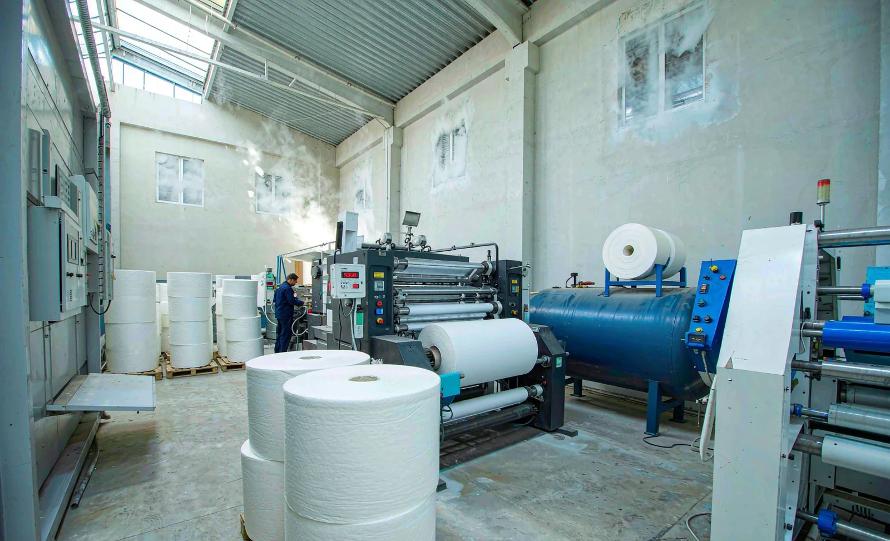
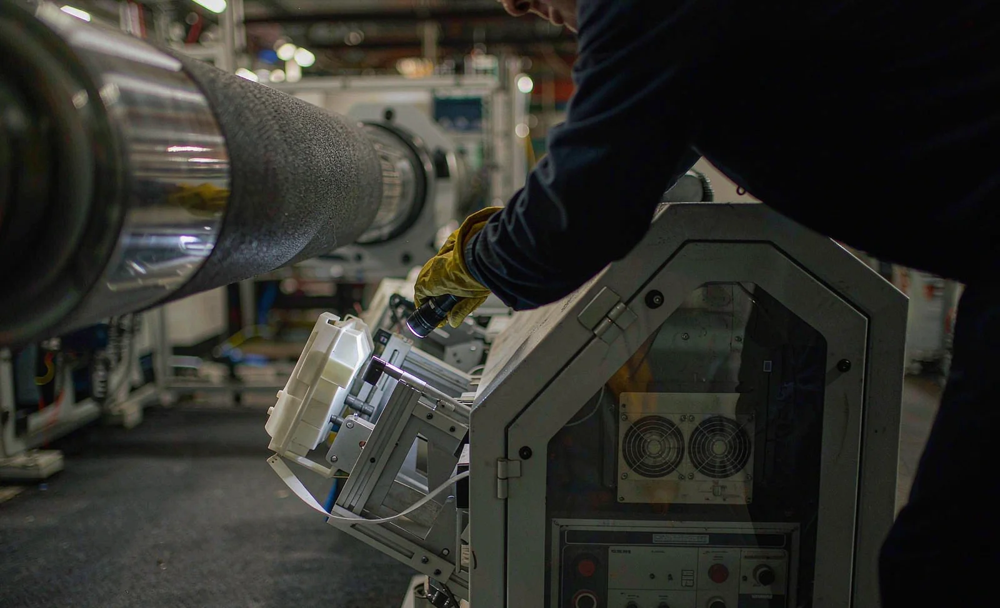

Published October 13, 2026 | By HDPTH Technical Editorial Team

Most slitter rewinder specifications list power, air, speed and widths. Very few list the climate the machine will live in — yet a converting hall is not a neutral environment. A plant near the sea, a monsoon-season factory with open loading doors, or an over-cooled winter hall all change how the web behaves and how the machine ages. Buyers who treat climate as a specification input, alongside the tension-zone decisions covered in our tension zone guide, get machines that hold quality in August as well as in January.
What moist air does to the web
Paper, board and hydrophilic nonwovens such as spunlace exchange moisture with the air until they reach equilibrium. As moisture content rises, the web gains weight, widens slightly, softens in stiffness and changes its tension response — which is why the calibration practices in our tension calibration guide must be revisited seasonally, not just at commissioning. A tension set for February can be wrong in July, and the symptom appears as telescoping, starred rolls or waviness rather than as an obvious climate problem. Moisture also enters the winding process itself: entrained air between layers, combined with damp surfaces, changes interlayer slip and final roll hardness. If you wind at one humidity and your customer opens the roll in another, expect complaints you can trace back to conditioning, not to the machine. The storage practices in our finished roll storage guide apply to the parent rolls entering the machine just as much as to finished goods leaving it.
Static, dust and the humidity trap
Dry air is the static problem, not humid air. Below roughly 40% relative humidity, films and nonwovens accumulate charge faster and dissipate it slowly, so winter halls and air-conditioned spaces see peak sheet cling, dust attraction and operator shock. Humid climates suppress static but trade it for moisture gain, web handling friction changes and adhesive behavior shifts. The practical conclusion for buyers is that neither climate is self-solving: active static control sized for the driest condition, as set out in our static control guide, plus humidity monitoring at the machine, are both required. Dust behavior follows static — charged webs pull airborne fibers and lint onto the web before slitting, which is why plants with wide seasonal humidity swings benefit most from the cleaning systems described in our web cleaning guide.

What moist air does to the machine
The machine is a buyer of climate too. Condensation forms on steel when surfaces sit below the dew point — overnight, after weekends, or when a hot machine meets cold humid air at shift start. Unprotected uncoated rollers, knife edges and fasteners corrode; electrical cabinets breathe humid air and condense internally unless sealed, filtered or heated, which is why the electrical standards in our electrical standards guide matter more in coastal plants. Lubrication intervals shorten because emulsions form in humid air, a point our preventive maintenance guide treats as an environment-dependent schedule. Bearings and drives are rated for ambient conditions: ask each supplier to confirm the machine is rated for your worst month, not a laboratory 25°C.
Climate follows the roll through the whole flow
Climate decisions do not stop at the machine frame, and the weakest link defines the outcome. A conditioned converting hall loses its value if parent rolls are staged overnight in a humid corridor, or if finished rolls wait beside open dock doors before wrapping — the moisture gradient goes into the roll and appears later as edge waviness or loose wraps at your customer’s unwind. Map the flow: receiving storage, machine-side staging, the slitter itself, and outbound storage, then decide which zones need conditioning and which only need monitoring. Label stock and release liner buyers should also ask how humidity shifts adhesive behavior between unwind and rewind, a point our release liner guide treats as a specification input. Finally, match the machine’s climate envelope to what the hall will actually hold: there is no point paying for 22°C and 50% RH control if doors stay open all summer. Specify the honest range, and hold the supplier to performance inside it — the same condition-attached logic our performance guarantee guide applies to speed and quality.
What to specify before you buy
Four specification lines prevent most climate-related disputes. First, disclose environment: twelve months of plant temperature and relative humidity ranges, dew point, whether the hall is conditioned, and air quality near the machine. Second, hardware protection: corrosion-resistant finishes on frames and rollers, sealed enclosures with condensation management, coated or stainless knife holders, and component ratings for your ambient. Third, process side: humidity conditioning and storage strategy for hygroscopic webs, and static control sized for the driest season. Fourth, acceptance: a factory acceptance test that cycles the machine across its specified climate envelope and verifies static performance, enclosure integrity and roll quality at both dry and moist ends of your real range — the protocol structure in our FAT checklist guide accommodates this. A supplier who knows your climate designs for it; a supplier who learns about it at commissioning invoices you for it.
Buying for a humid or coastal plant?
Send HDPTH your annual temperature and humidity profile with your material list. We will specify corrosion protection, enclosure climate control and static mitigation for your worst month, and prove the climate-dependent criteria in the acceptance test.
Submit Your Project InquiryFrequently asked questions
Does humidity really affect slitting and rewinding quality?
Yes, and in several independent ways. Moisture changes web dimensions and stiffness, which shifts tension and slit width; humidity controls how much static the web generates; entrained moisture between layers changes how rolls harden and whether they telescope; and condensation attacks uncoated machine surfaces, knife edges and electrical cabinets. A machine specified in a temperate test hall can behave differently in a plant at 35°C and 85% relative humidity.
Which materials are most sensitive to humidity?
Paper and paperboard absorb moisture, so their basis weight, dimension and stiffness move with the air around them. Spunlace and other hydrophilic nonwovens gain weight and lose dry strength. Nylon and some films change dimension with moisture. Release liners and adhesives can soften or coat off in high humidity. A roll wound at 40% RH and stored at 80% will gain moisture unevenly and develop loose outer wraps.
What machine options help in humid climates?
Specify corrosion-protected finishes on frames and rollers, sealed or filtered electrical enclosures with dehumidification or heating to prevent condensation, stainless or coated knife holders, and drives rated for the actual ambient temperature and humidity class. On the process side, moisture-conditioning stages for hygroscopic webs, humidity-controlled roll storage and antistatic equipment sized for the worst seasonal conditions matter more than any single machine feature.
What site data should I give the supplier before buying?
Give a full year of plant conditions, not just an annual average: monthly temperature and relative humidity ranges, dew point in the wet season, whether the hall is air conditioned or open to loading doors, altitude, and any nearby sources of moisture or corrosive air. Suppliers that receive only ‘tropical climate’ make conservative assumptions that cost money or optimistic ones that fail on site.
How does humidity interact with static electricity?
Dry air makes static worse: below roughly 40% relative humidity, films and nonwovens accumulate charge faster and dissipate it more slowly, so sheet cling, dust attraction and shock hazards peak in winter or in over-cooled halls. Humid plants have the opposite problem — less static but more moisture gain in the web. Both ends argue for active static control and humidity monitoring rather than assuming the climate will average out.
What should the acceptance test cover for a humid-climate installation?
The factory acceptance test cannot reproduce your monsoon, but it can prove the design intent: run the machine through a humidity and temperature range within its specified envelope, demonstrate static mitigation at the lowest planned humidity, inspect condensation protection in enclosures after thermal cycling, and verify that roll hardness and geometry stay within tolerance on your material at both dry and moist conditioning states.